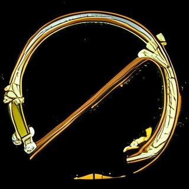
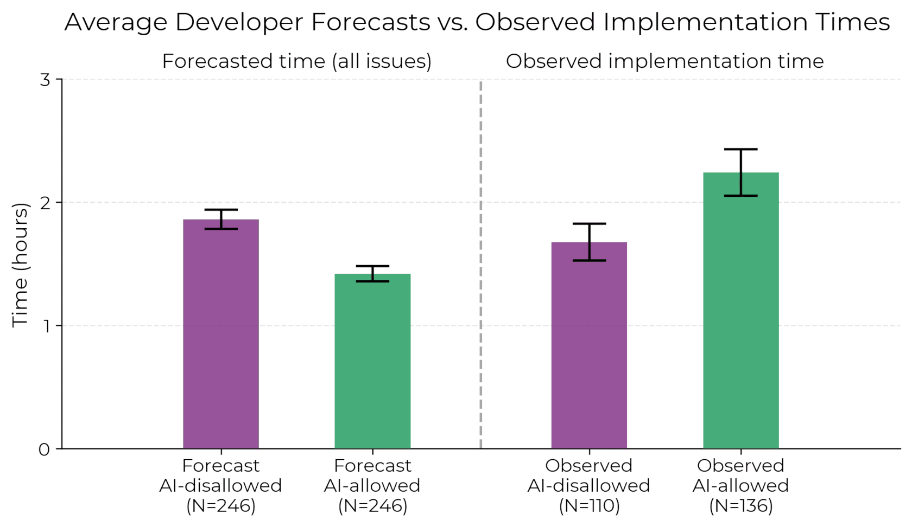
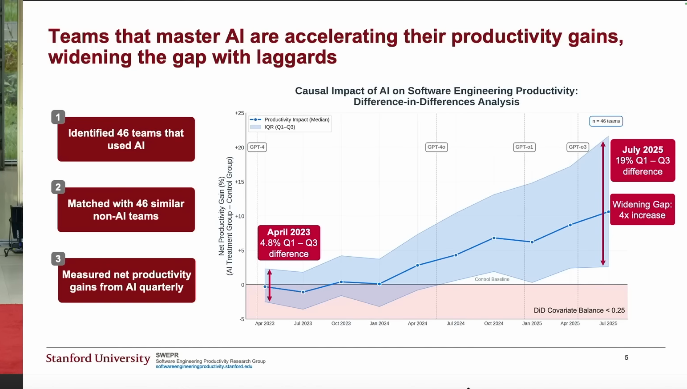
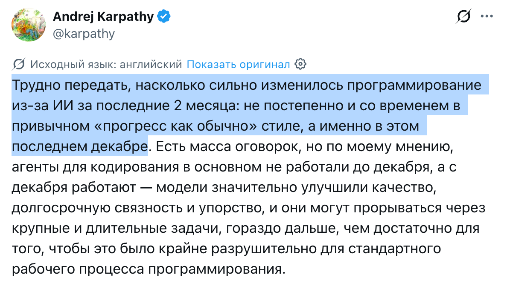
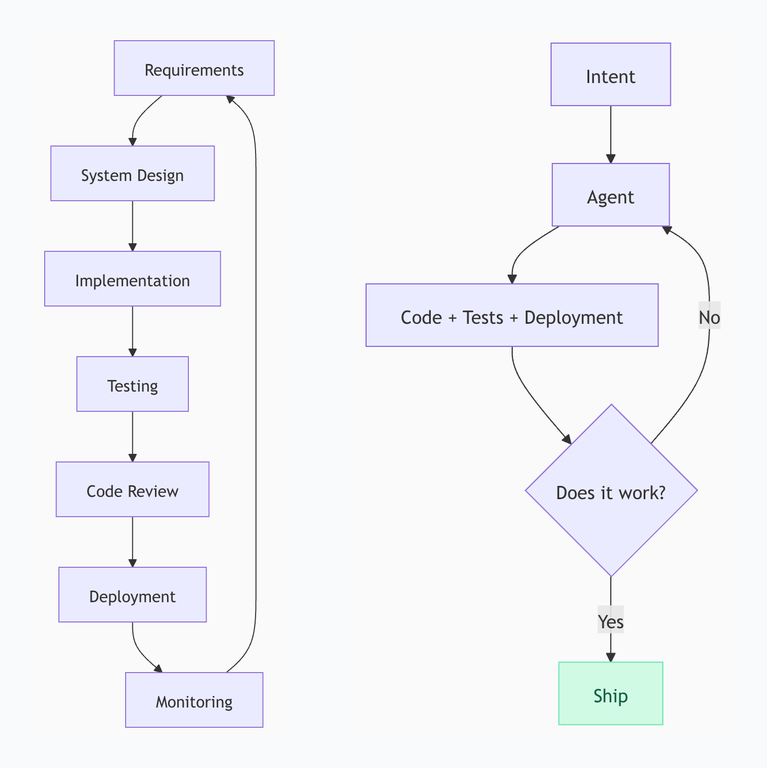
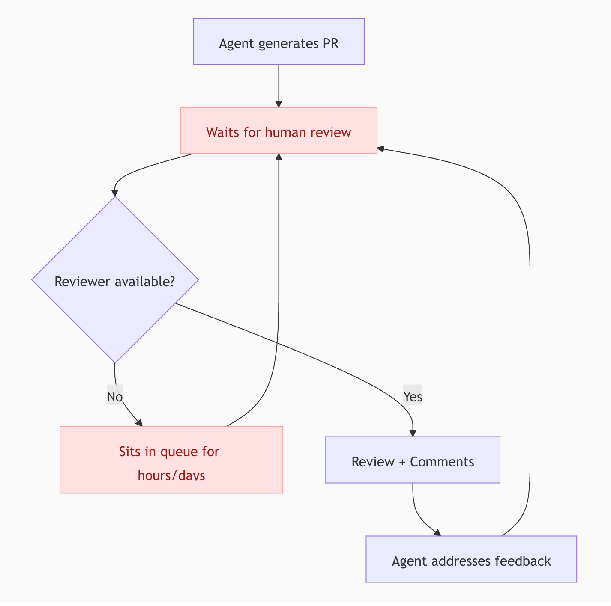
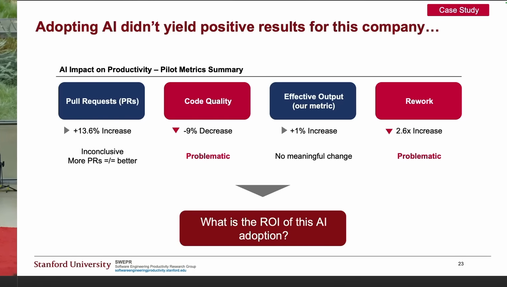

<!DOCTYPE html>
<html lang="ru">
<head>
<link rel="canonical" href="https://grably.tech/slides/datafest-2026/">
  <meta charset="UTF-8">
  <meta name="viewport" content="width=device-width, initial-scale=1.0">
  <title>AI-native SDLC. Грабли, на которые почти все наступают</title>

  <link rel="preconnect" href="https://fonts.googleapis.com">
  <link rel="preconnect" href="https://fonts.gstatic.com" crossorigin>
  <link href="https://fonts.googleapis.com/css2?family=Manrope:wght@300;400;500;600;700;800&family=JetBrains+Mono:ital,wght@0,400;0,500;0,600;1,400&display=swap" rel="stylesheet">

  <script src="https://cdn.tailwindcss.com/3.4.17"></script>
  <script>
    tailwind.config = {
      theme: {
        extend: {
          fontFamily: {
            display: ['Manrope', 'sans-serif'],
            body: ['Manrope', 'sans-serif'],
            mono: ['JetBrains Mono', 'monospace'],
          },
          colors: {
            bg: '#f8fafc',
            surface: '#ffffff',
            border: '#d7dce5',
            accent: '#d94f32',
            muted: '#526071',
            dim: '#7a8493',
          },
          boxShadow: {
            glow: '0 18px 42px rgba(15, 23, 42, 0.12)',
          },
          fontSize: {
            xs: ['14px', '20px'],
            sm: ['16px', '22px'],
            base: ['18px', '26px'],
            lg: ['21px', '30px'],
            xl: ['24px', '32px'],
            '2xl': ['28px', '36px'],
            '3xl': ['32px', '40px'],
            '4xl': ['38px', '44px'],
          }
        }
      }
    };
  </script>

  <script crossorigin src="https://unpkg.com/react@18.3.1/umd/react.production.min.js"></script>
  <script crossorigin src="https://unpkg.com/react-dom@18.3.1/umd/react-dom.production.min.js"></script>
  <script src="https://unpkg.com/@babel/standalone@7.29.7/babel.min.js"></script>

  <style>
    * { margin: 0; padding: 0; box-sizing: border-box; }
    html, body, #root { width: 100vw; height: 100vh; overflow: hidden; background: #f8fafc; }
    body {
      font-family: 'Manrope', sans-serif;
      color: #111827;
      -webkit-font-smoothing: antialiased;
      font-variant-numeric: lining-nums;
      font-feature-settings: "lnum" 1;
      background:
        linear-gradient(180deg, rgba(255, 255, 255, 0.96), rgba(248, 250, 252, 0.96)),
        #f8fafc;
    }

    .font-display {
      font-variant-numeric: lining-nums;
      font-feature-settings: "lnum" 1;
    }

    .font-mono,
    .slide-counter,
    ol.slide-ol > li::before {
      font-variant-numeric: lining-nums tabular-nums;
      font-feature-settings: "lnum" 1, "tnum" 1;
    }

    .stage {
      position: fixed;
      inset: 0;
      background: #f8fafc;
      overflow: hidden;
    }
    .slide-frame {
      position: absolute;
      left: 50%;
      top: 50%;
      width: 1280px;
      height: 720px;
      transform: translate(-50%, -50%) scale(var(--slide-scale, 1));
      transform-origin: center center;
    }

    .slide-enter { animation: slideIn 0.38s cubic-bezier(0.16, 1, 0.3, 1) forwards; }
    @keyframes slideIn {
      from { opacity: 0; transform: translateY(10px) scale(0.992); }
      to { opacity: 1; transform: translateY(0) scale(1); }
    }

    .glass {
      background: rgba(255, 255, 255, 0.92);
      border: 1px solid #d7dce5;
      box-shadow: 0 18px 42px rgba(15, 23, 42, 0.10);
    }

    .accent-line {
      width: 58px;
      height: 3px;
      border-radius: 999px;
      background: linear-gradient(90deg, #d94f32, #f07c5f);
    }

    ul.slide-list > li {
      position: relative;
      padding-left: 1.45rem;
    }
    ul.slide-list > li::before {
      content: '';
      position: absolute;
      left: 0;
      top: 0.65em;
      width: 7px;
      height: 7px;
      border-radius: 50%;
      background: #d94f32;
      box-shadow: 0 0 0 4px rgba(217, 79, 50, 0.14);
    }

    ul.slide-list-sm > li {
      position: relative;
      padding-left: 1.1rem;
    }
    ul.slide-list-sm > li::before {
      content: '';
      position: absolute;
      left: 0;
      top: 0.6em;
      width: 5px;
      height: 5px;
      border-radius: 50%;
      background: #d94f32;
      box-shadow: 0 0 0 3px rgba(217, 79, 50, 0.12);
    }

    .trend-media figure {
      width: 100%;
      height: 100%;
      min-height: 0;
      display: flex;
      flex-direction: column;
      align-items: flex-end;
      justify-content: flex-start;
    }

    .trend-media img {
      width: 100%;
      max-height: min(410px, calc(100% - 36px));
      object-fit: contain;
    }

    .trend-media a {
      align-self: center;
      flex-shrink: 0;
    }

    ol.slide-ol {
      list-style: none;
      counter-reset: step;
    }
    ol.slide-ol > li {
      counter-increment: step;
      position: relative;
      padding-left: 2.7rem;
    }
    ol.slide-ol > li::before {
      content: counter(step);
      position: absolute;
      left: 0;
      top: -0.05em;
      font-family: 'Manrope', sans-serif;
      font-size: 1.15em;
      font-weight: 700;
      color: #d94f32;
    }

    ol.slide-ol-from-5 { counter-reset: step 4; }
    ol.slide-ol-from-5 > li::before { content: counter(step); }

    .speaker-layout {
      width: 100%;
      display: flex;
      align-items: stretch;
      gap: 3.5rem;
    }
    .speaker-layout-main {
      flex: 1 1 auto;
      min-width: 0;
      display: flex;
      flex-direction: column;
      justify-content: space-between;
    }
    .speaker-photo-wrap {
      flex: 0 0 260px;
      margin-left: auto;
    }
    .speaker-photo-wrap img {
      width: 100%;
      height: auto;
      max-width: 260px;
    }

    @media (max-width: 1200px) {
      .speaker-layout { gap: 2rem; }
      .speaker-photo-wrap { flex-basis: 220px; }
      .speaker-photo-wrap img { max-width: 220px; }
    }

    @media screen and (pointer: coarse), screen and (max-width: 768px) {
      .slide-link-qr {
        display: none;
      }
    }

    .duo svg text { font: 600 16px 'JetBrains Mono', monospace; text-anchor: middle; fill: #111827; }
    .duo .in, .duo .packet { fill: #111827; }
    .duo .track, .duo .wire { stroke: #111827; stroke-width: 2; fill: none; }
    .duo .wire { stroke-opacity: .3; }
    .duo .station > *, .duo .out rect { fill: #f8fafc; stroke: #111827; stroke-width: 2; transition: fill .15s, opacity .25s; }
    .duo .station.hot > *, .duo .out.hot rect { fill: #d94f32; }
    .duo .out path { stroke: #111827; stroke-width: 2; fill: none; }
    .duo .station, .duo .out { transition: opacity .25s; }
    .duo .hidden { opacity: 0; }
    .duo .pen { stroke: #d94f32; stroke-width: 2; stroke-dasharray: 3 4; opacity: 0; }
    .duo .agent circle { fill: #d94f32; stroke: #d94f32; stroke-width: 2; transition: fill .3s; }
    .duo .agent text { fill: #fff; font-weight: 700; }
    .duo .duo-left .agent text { fill: #d94f32; }
    .duo .agent.ghost circle { fill: #f8fafc; stroke-dasharray: 4 4; }
    .duo .link { stroke: #111827; stroke-opacity: .25; stroke-width: 1.5; stroke-dasharray: 3 5; transition: stroke .15s; }
    .duo .link.hot { stroke: #d94f32; stroke-opacity: 1; stroke-width: 2.5; stroke-dasharray: none; }
    .duo .tool rect { fill: #fff; stroke: #111827; stroke-width: 1.5; transition: fill .15s; }
    .duo .tool.hot rect { fill: #d94f32; stroke: #d94f32; }
    .duo .tool.hot text { fill: #fff; }

    @page {
      size: 16in 9in;
      margin: 0;
    }
    @media print {
      html, body, #root {
        width: auto;
        height: auto;
        overflow: visible;
        background: #f8fafc !important;
      }
      body {
        -webkit-print-color-adjust: exact;
        print-color-adjust: exact;
        color-adjust: exact;
      }
      * {
        -webkit-print-color-adjust: exact;
        print-color-adjust: exact;
      }
      .glass {
        background: #ffffff !important;
        border: 1px solid #d7dce5 !important;
        backdrop-filter: none !important;
        -webkit-backdrop-filter: none !important;
      }
      .screen-only { display: none !important; }
      .print-only { display: block !important; }
      .print-slide {
        width: 100vw;
        height: 100vh;
        min-height: 100vh;
        page-break-after: always;
        break-after: page;
        overflow: hidden;
        background: #f8fafc !important;
      }
      .print-slide-content,
      .print-slide-content > * {
        width: 100% !important;
        height: 100% !important;
      }
      .print-slide:last-child {
        page-break-after: avoid;
        break-after: avoid;
      }
    }
    @media screen {
      .print-only { display: none !important; }
    }
  </style>
</head>
<body>
  <div id="root"></div>

  <script type="text/babel">
    const { useState, useEffect, useCallback, useContext } = React;

    const PrintSolutionContext = React.createContext('screen');

    function Slide({ children, className = '', contentClassName = '', align = 'center', background = null }) {
      return (
        <div className={`relative overflow-hidden w-full h-full px-36 py-12 flex flex-col ${align === 'start' ? 'justify-start' : 'justify-center'} ${className}`}>
          {background}
          <div className={`relative z-10 w-full max-w-[1152px] mx-auto ${contentClassName}`}>
            {children}
          </div>
        </div>
      );
    }

    function TitleSlide({ title, subtitle }) {
      return (
        <Slide className="items-center text-center">
          <div className="w-full flex flex-col items-center">
            <h1 className="font-display text-6xl font-800 tracking-tight leading-tight max-w-5xl">
              {title}
            </h1>
            {subtitle && (
              <p className="font-body text-2xl text-muted mt-8 max-w-5xl leading-relaxed">
                {subtitle}
              </p>
            )}
          </div>
        </Slide>
      );
    }

    function H2({ children, className = "", wrapperClassName = "max-w-5xl" }) {
      return (
        <div className={`mb-9 ${wrapperClassName} mx-auto w-full`}>
          <h2 className={`font-display text-5xl font-700 tracking-tight leading-tight ${className}`}>{children}</h2>
        </div>
      );
    }

    function H3({ children }) {
      return (
        <h3 className="font-display text-3xl font-700 tracking-tight mb-5 max-w-5xl mx-auto w-full">{children}</h3>
      );
    }

    function HistoricalTimeline({ active }) {
      const steps = [
        { month: 'Июль', year: '2025' },
        { month: 'Август', year: '2025' },
        { month: 'Декабрь', year: '2025' },
        { month: 'Март', year: '2026' },
      ];
      const pct = (active / (steps.length - 1)) * 100;
      return (
        <div className="w-full h-16 shrink-0">
          <div className="relative h-full">
            <div className="absolute left-[6px] right-[6px] top-[6px] h-[2px] bg-border" />
            <div className="absolute left-[6px] top-[6px] h-[2px] bg-accent transition-all duration-500" style={{ width: `calc((100% - 12px) * ${pct / 100})` }} />
            <div className="relative z-10 flex w-full justify-between">
              {steps.map((step, i) => (
                <div key={`${step.month}-${step.year}`} className="flex flex-col items-center gap-1.5">
                  <div className={`h-3 w-3 rounded-full border-2 ${i <= active ? 'border-accent bg-accent shadow-[0_0_0_5px_rgba(217,79,50,0.16)]' : 'border-border bg-bg'}`} />
                  <span className={`font-mono text-sm leading-none ${i <= active ? 'text-[#111827]' : 'text-dim'}`}>{step.month}</span>
                  <span className={`font-mono text-xs leading-none ${i <= active ? 'text-[#111827]' : 'text-dim'}`}>{step.year}</span>
                </div>
              ))}
            </div>
          </div>
        </div>
      );
    }

    function runParadigmDuo(root) {
      let alive = true;
      const wait = (ms) => new Promise((r) => setTimeout(r, ms));
      const tween = (ms, step) => new Promise((resolve) => {
        const t0 = performance.now();
        const frame = (now) => {
          const t = Math.min(1, (now - t0) / ms);
          if (alive) step(t < .5 ? 2 * t * t : 1 - Math.pow(-2 * t + 2, 2) / 2, t);
          if (t < 1 && alive) requestAnimationFrame(frame); else resolve();
        };
        requestAnimationFrame(frame);
      });
      const at = (el, x, y) => { el.setAttribute('cx', x); el.setAttribute('cy', y); };

      const L = root.querySelector('.duo-left svg');
      const track = L.querySelector('.track');
      const trackLen = track.getTotalLength();
      const stations = [...L.querySelectorAll('.station')];
      const lAgent = L.querySelector('.agent');
      const pen = L.querySelector('.pen');
      const lPacket = L.querySelector('.packet');
      const lOut = L.querySelector('.out');
      const agentAt = (x, y) => lAgent.setAttribute('transform', `translate(${x} ${y})`);

      async function runLeft() {
        track.style.strokeDasharray = trackLen;
        track.style.strokeDashoffset = trackLen;
        stations.forEach((st) => { st.classList.add('hidden'); st.classList.remove('hot'); });
        lOut.classList.add('hidden');
        lAgent.classList.remove('ghost');
        lPacket.style.opacity = 0;
        pen.style.opacity = 1;
        await tween(2600, (e, t) => {
          const x = 24 + (483 - 24) * t;
          track.style.strokeDashoffset = trackLen * (1 - t);
          agentAt(x, 80);
          pen.setAttribute('x1', x); pen.setAttribute('x2', x);
          stations.forEach((st) => { if (x >= +st.dataset.x - 20) st.classList.remove('hidden'); });
          if (t >= 1) lOut.classList.remove('hidden');
        });
        if (!alive) return;
        pen.style.opacity = 0;
        lAgent.classList.add('ghost');
        await tween(800, (e) => agentAt(483 + (60 - 483) * e, 80));
        lPacket.style.opacity = 1;
        while (alive) {
          await tween(2200, (e, t) => {
            const x = 24 + (483 - 24) * t;
            at(lPacket, x, 170);
            stations.forEach((st) => st.classList.toggle('hot', Math.abs(x - +st.dataset.x) < 22));
          });
          lOut.classList.add('hot');
          await wait(450);
          lOut.classList.remove('hot');
        }
      }

      const R = root.querySelector('.duo-right svg');
      const links = [...R.querySelectorAll('.link')];
      const tools = [...R.querySelectorAll('.tool')];
      const rPacket = R.querySelector('.packet');
      const rOut = R.querySelector('.out');
      const plans = [[0, 3], [1, 4, 2], [5, 0, 3], [2, 5, 1, 4], [3, 1]];
      const move = (el, x0, y0, x1, y1, ms) => tween(ms, (e) => at(el, x0 + (x1 - x0) * e, y0 + (y1 - y0) * e));

      async function runRight() {
        let k = 0;
        while (alive) {
          const plan = plans[k++ % plans.length];
          await move(rPacket, 24, 150, 260, 150, 700);
          for (let i = 0; i < plan.length && alive; i++) {
            const tool = tools[plan[i]], tx = +tool.dataset.x, ty = +tool.dataset.y;
            links[plan[i]].classList.add('hot');
            await move(rPacket, 260, 150, tx, ty, 380);
            tool.classList.add('hot');
            await wait(280);
            tool.classList.remove('hot');
            await move(rPacket, tx, ty, 260, 150, 380);
            links[plan[i]].classList.remove('hot');
          }
          if (!alive) return;
          await move(rPacket, 260, 150, 483, 150, 700);
          rOut.classList.add('hot');
          await wait(500);
          rOut.classList.remove('hot');
          at(rPacket, 24, 150);
          await wait(300);
        }
      }

      runLeft();
      runRight();
      return () => { alive = false; };
    }

    function ParadigmDuo() {
      const ref = React.useRef(null);
      useEffect(() => {
        if (ref.current.closest('.print-only')) return;
        return runParadigmDuo(ref.current);
      }, []);
      const tools = [
        [126, 76, 'skills'], [260, 45, 'scripts/'], [394, 76, 'notes'],
        [394, 224, 'cli'], [260, 255, 'mcp'], [126, 224, 'browser'],
      ];
      const arrow = <span className="text-accent mx-2">→</span>;
      return (
        <div ref={ref} className="duo grid grid-cols-2 gap-6">
          <div className="duo-left glass rounded-2xl overflow-hidden flex flex-col">
            <p className="px-6 py-3 border-b border-border font-mono text-xl font-600 text-[#111827]">агент{arrow}ПО{arrow}работа</p>
            <svg viewBox="0 25 520 260" className="block w-full px-3 pt-3 pb-4" aria-hidden="true">
              <circle className="in" cx="24" cy="170" r="7" />
              <path className="track" d="M24 170H483" />
              {[104, 184, 264, 424].map((x) => (
                <g key={x} className="station" data-x={x}><rect x={x - 20} y="150" width="40" height="40" rx="6" /></g>
              ))}
              <g className="station" data-x="344"><path d="M324 158v24a20 7 0 0 0 40 0v-24" /><ellipse cx="344" cy="158" rx="20" ry="7" /></g>
              <g className="out"><rect x="483" y="154" width="26" height="32" rx="3" /><path d="M489 164h14M489 171h14M489 178h9" /></g>
              <line className="pen" x1="483" y1="100" x2="483" y2="170" />
              <g className="agent ghost" transform="translate(60 80)"><circle r="20" /><text y="40">агент</text></g>
              <circle className="packet" cx="24" cy="170" r="6" />
            </svg>
          </div>
          <div className="duo-right glass rounded-2xl overflow-hidden flex flex-col">
            <p className="px-6 py-3 border-b border-border font-mono text-xl font-600 text-[#111827]">агент{arrow}работа</p>
            <svg viewBox="0 25 520 260" className="block w-full px-3 pt-3 pb-4" aria-hidden="true">
              <circle className="packet" cx="24" cy="150" r="6" />
              <path className="wire" d="M24 150H226M294 150H483" />
              {tools.map(([x, y]) => <line key={`${x}-${y}`} className="link" x1="260" y1="150" x2={x} y2={y} />)}
              {tools.map(([x, y, label]) => (
                <g key={label} className="tool" data-x={x} data-y={y}>
                  <rect x={x - 48} y={y - 16} width="96" height="32" rx="6" />
                  <text x={x} y={y + 6}>{label}</text>
                </g>
              ))}
              <circle className="in" cx="24" cy="150" r="7" />
              <g className="out" transform="translate(0 -20)"><rect x="483" y="154" width="26" height="32" rx="3" /><path d="M489 164h14M489 171h14M489 178h9" /></g>
              <g className="agent"><circle cx="260" cy="150" r="34" /><text x="260" y="156">агент</text></g>
            </svg>
          </div>
        </div>
      );
    }

    function Panel({ children, className = '' }) {
      return (
        <div className={`glass rounded-2xl p-8 ${className}`}>
          {children}
        </div>
      );
    }

    function SmallPanel({ children, className = '' }) {
      return (
        <div className={`glass rounded-xl p-5 ${className}`}>
          {children}
        </div>
      );
    }

    function DarkPanel({ children, className = '' }) {
      return (
        <div className={`rounded-2xl border border-white/14 bg-white/[0.07] p-8 shadow-[0_24px_70px_rgba(0,0,0,0.28)] ${className}`}>
          {children}
        </div>
      );
    }

    function Solution({ children }) {
      const printMode = useContext(PrintSolutionContext);
      const [open, setOpen] = useState(false);
      if (printMode === 'closed') {
        return (
          <div className="glass rounded-2xl mt-6 overflow-hidden" data-solution-open="false">
            <div className="w-full flex items-center justify-between gap-4 px-8 py-5 text-left">
              <span className="font-display text-lg text-[#1f7a42]">Решение</span>
              <span className="font-mono text-xl text-[#1f7a42]">+</span>
            </div>
          </div>
        );
      }
      const isForced = printMode !== 'screen';
      const isOpen = isForced ? printMode === 'open' : open;
      return (
        <div className="glass rounded-2xl mt-6 overflow-hidden transition-all" data-solution-open={isOpen ? 'true' : 'false'}>
          <button
            onClick={() => {
              if (!isForced) setOpen(o => !o);
            }}
            className="w-full flex items-center justify-between gap-4 px-8 py-5 text-left hover:bg-[#edf7f0] transition-colors"
          >
            <span className="font-display text-lg text-[#1f7a42]">Решение</span>
            <span className={`font-mono text-xl text-[#1f7a42] transition-transform ${isOpen ? 'rotate-45' : ''}`}>+</span>
          </button>
          <div className={`grid transition-all duration-300 ease-out ${isOpen ? 'grid-rows-[1fr] opacity-100' : 'grid-rows-[0fr] opacity-0'}`}>
            <div className="overflow-hidden">
              <div className="px-8 pb-7 font-body text-xl text-[#111827] leading-relaxed">
                {children}
              </div>
            </div>
          </div>
        </div>
      );
    }

    function TrendSlide({ active, items, children }) {
      return (
        <Slide align="start" className="!px-24" contentClassName="pt-8 pb-10 h-full flex flex-col !max-w-[1220px]">
          <div className="mb-8 max-w-[1220px] mx-auto w-full">
            <h2 className="font-display text-5xl font-700 tracking-tight leading-tight">Тренды прошлого</h2>
          </div>
          <div className="grid grid-cols-[340px_minmax(0,1fr)] gap-8 max-w-[1220px] mx-auto w-full flex-1 min-h-0">
            <div className="pt-2">
              <ol className="slide-ol space-y-3 font-body text-lg text-[#111827] leading-snug">
                {items.map((item, i) => (
                  <li key={item} className={i === items.length - 1 ? 'font-700 text-[#111827]' : 'text-muted'}>
                    {item}
                  </li>
                ))}
              </ol>
            </div>
            <div className="min-w-0 min-h-0 flex flex-col">
              <div className="trend-media min-h-0 flex-1">
                {children}
              </div>
            </div>
          </div>
          <div className="max-w-[1220px] mx-auto w-full pt-8">
            <HistoricalTimeline active={active} />
          </div>
        </Slide>
      );
    }

    function FigureLink({ href, children }) {
      return (
        <a href={href} target="_blank" rel="noopener noreferrer" className="mt-3 block text-center font-mono text-sm text-dim hover:text-accent transition-colors">
          {children}
        </a>
      );
    }

    function ProgressBar({ current, total }) {
      const pct = ((current + 1) / total) * 100;
      return (
        <div className="fixed bottom-0 left-0 w-full h-[2px] bg-border z-50">
          <div className="h-full bg-accent transition-all duration-500 ease-out" style={{ width: `${pct}%` }} />
        </div>
      );
    }

    function SlideChrome({ current, total, mode = 'screen' }) {
      const showCounter = current !== 0;
      const showQr = current !== 0 && current < total - 1;
      const position = mode === 'print' ? 'absolute' : 'fixed';

      return (
        <>
          {showQr && (
            <a
              href="https://grably.tech/slides/datafest-2026/"
              target="_blank"
              rel="noopener noreferrer"
              className={`slide-link-qr ${position} top-4 right-4 z-50 rounded-md border border-border bg-white p-0.5 shadow-glow`}
              aria-label="Презентация со ссылками"
            >
              
            </a>
          )}
          {showCounter && (
            <div className={`${position} bottom-5 right-8 z-50 font-mono text-base leading-none text-dim select-none`}>
              {String(current + 1).padStart(2, '0')}<span className="text-border mx-1">/</span>{String(total).padStart(2, '0')}
            </div>
          )}
        </>
      );
    }

    const slides = [
      // 1. Speaker intro
      () => (
        <Slide contentClassName="max-w-[1110px]">
          <div className="grid grid-cols-[minmax(0,620px)_280px] items-stretch justify-between gap-12">
            <div className="flex flex-col justify-between">
              <h1 className="font-display text-5xl font-800 tracking-tight leading-tight max-w-5xl">
                AI-native SDLC:<br/>
                Грабли, на которые почти все наступают
              </h1>
              <div>
                <p className="font-display text-3xl font-700 tracking-tight mb-5">
                  Николай Шейко
                </p>
                <ul className="slide-list space-y-4 font-body text-xl text-muted leading-relaxed max-w-5xl">
                  <li>Кастомная ИИ разработка: <a href="https://grably.tech" target="_blank" rel="noopener noreferrer" className="text-accent font-mono hover:underline">grably.tech</a></li>
                  <li>Топовые онлайн конфы по ИИ: <a href="https://entropy.talk" target="_blank" rel="noopener noreferrer" className="text-accent font-mono hover:underline">entropy.talk</a></li>
                  <li>Курс по агентам: <a href="https://aiforwork.courses" target="_blank" rel="noopener noreferrer" className="text-accent font-mono hover:underline">aiforwork.courses</a></li>
                </ul>
              </div>
            </div>
            <div className="justify-self-end w-[280px]">
              
              <a href="https://t.me/ai_grably" target="_blank" rel="noopener noreferrer" className="flex items-center gap-3 mt-4 px-4 py-3 rounded-2xl border border-border bg-white shadow-glow hover:border-accent/50 transition-all">
                <div className="w-10 h-10 rounded-full border border-border bg-white overflow-hidden flex-shrink-0">
                  
                </div>
                <div className="min-w-0">
                  <p className="font-body text-lg font-bold leading-tight text-[#111827]">AI и грабли</p>
                  <p className="font-body text-[15px] leading-tight text-dim mt-0.5 whitespace-nowrap">13.7K подписчиков</p>
                </div>
                <div className="ml-auto w-9 h-9 rounded-full border border-[#2aabee]/30 bg-[#eaf7ff] flex items-center justify-center flex-shrink-0">
                  <svg viewBox="0 0 24 24" className="w-[18px] h-[18px] fill-[#2aabee]">
                    <path d="M9.04 15.47 8.7 20.3c.49 0 .7-.21.95-.46l2.28-2.18 4.72 3.46c.86.48 1.47.23 1.7-.8l3.08-14.45v-.01c.29-1.29-.47-1.8-1.3-1.5L1.96 9.02c-1.25.49-1.23 1.19-.22 1.5l4.71 1.47L17.4 5.2c.52-.34 1-.15.6.2L9.04 15.47Z" />
                  </svg>
                </div>
              </a>
            </div>
          </div>
        </Slide>
      ),

      // 2. План
      () => (
        <Slide>
          <H2 wrapperClassName="max-w-5xl">План</H2>
          <ol className="slide-ol space-y-5 font-body text-2xl text-[#111827] max-w-5xl mx-auto w-full leading-relaxed">
            <li>что уже происходит с SDLC</li>
            <li>топ ошибок при внедрении ИИ</li>
            <li>лайфхаки и best-practices</li>
            <li>что ждет завтра (и как готовиться)</li>
          </ol>
        </Slide>
      ),

      // 3. Тренды прошлого: METR
      () => (
        <TrendSlide active={0} items={['METR: ощущения ускорения 20%, реальность -20%']}>
          <figure className="w-full">
            
            <FigureLink href="https://arxiv.org/pdf/2507.09089">METR, июль 2025</FigureLink>
          </figure>
        </TrendSlide>
      ),

      // 4. Тренды прошлого: SWEPR
      () => (
        <TrendSlide active={1} items={[
          'METR: ощущения ускорения 20%, реальность -20%',
          'SWEPR: ускорение есть и разрыв растет',
        ]}>
          <figure className="w-full">
            
            <FigureLink href="https://aiconference.com/wp-content/uploads/2025/09/Yegor-Denisov-Blanch-Will-AI-Replace-Software-Engineers_-.pptx.pdf">SWEPR / Stanford, август 2025</FigureLink>
          </figure>
        </TrendSlide>
      ),

      // 5. Тренды прошлого: агенты заработали
      () => (
        <TrendSlide active={2} items={[
          'METR: ощущения ускорения 20%, реальность -20%',
          'SWEPR: ускорение есть и разрыв растет',
          'Karpathy: Агенты заработали',
        ]}>
          <figure className="w-full">
            
            <FigureLink href="https://x.com/karpathy/status/2026731645169185220">Karpathy про декабрь 2025</FigureLink>
          </figure>
        </TrendSlide>
      ),

      // 6. Тренды прошлого: SDLC is dead
      () => (
        <TrendSlide active={3} items={[
          'METR: ощущения ускорения 20%, реальность -20%',
          'SWEPR: ускорение есть и разрыв растет',
          'Karpathy: Агенты заработали',
          'Boris Tane: SDLC мертв',
        ]}>
          <figure className="w-full">
            
            <FigureLink href="https://boristane.com/blog/the-software-development-lifecycle-is-dead/">Boris Tane: The Software Development Lifecycle is Dead</FigureLink>
          </figure>
        </TrendSlide>
      ),

      // 7. Тренды прошлого: Review Curse
      () => (
        <TrendSlide active={3} items={[
          'METR: ощущения ускорения 20%, реальность -20%',
          'SWEPR: ускорение есть и разрыв растет',
          'Karpathy: Агенты заработали',
          'Boris Tane: SDLC мертв',
          'Review - главный bottleneck',
        ]}>
          <figure className="w-full">
            
            <FigureLink href="https://boristane.com/blog/the-software-development-lifecycle-is-dead/">Boris Tane: Review Curse</FigureLink>
          </figure>
        </TrendSlide>
      ),

      // 11. Ошибка 1. Работа в синхронном режиме
      () => (
        <Slide contentClassName="flex flex-col items-center text-center">
          <h2 className="font-display text-5xl font-700 tracking-tight leading-tight mb-9">Ошибка 1. Работа в синхронном режиме</h2>
          <Panel className="max-w-5xl w-full">
            <div className="flex items-center justify-center gap-10">
              <div className="text-center">
                <p className="font-display text-3xl text-[#111827]">Developer</p>
                <p className="font-mono text-lg text-muted mt-2">CPU-bound</p>
              </div>
              <p className="font-display text-3xl text-dim">vs</p>
              <div className="text-center">
                <p className="font-display text-3xl text-[#111827]">Engineering Manager</p>
                <p className="font-mono text-lg text-muted mt-2">IO-bound</p>
              </div>
            </div>
            </Panel>
        </Slide>
      ),

      // 12. Кейс 1: Перенос фронтенда на новый стек
      () => (
        <Slide className="bg-[#0b0f19] text-white">
          <div className="mb-9 max-w-5xl mx-auto w-full">
            <h2 className="font-display text-5xl font-700 tracking-tight leading-tight">Кейс 1: Перенос фронтенда на новый стек</h2>
          </div>
          <DarkPanel className="max-w-5xl mx-auto w-full">
            <ul className="slide-list space-y-5 font-body text-2xl text-white/86 leading-relaxed">
              <li>Компания оплачивает ИИ для команды</li>
              <li>Команда пользуется, но кто как умеет, централизированной настройки почти нет</li>
              <li>Перевозят фронт на новый стек, хотят ускорить за счет ИИ, заодно прокачаться</li>
            </ul>
          </DarkPanel>
        </Slide>
      ),

      // 14. Ошибка 2. Feedback Loop
      () => (
        <Slide>
          <H2>Ошибка 2. Feedback Loop</H2>
          <div className="max-w-5xl mx-auto w-full">
            <Panel>
              <ul className="slide-list space-y-4 font-body text-2xl text-[#111827] leading-relaxed">
                <li>Агент пишет код</li>
                <li>Тестит человек в браузере</li>
              </ul>
            </Panel>
            <Solution>Агент сравнивает старый и новый фронт</Solution>
          </div>
        </Slide>
      ),

      // 15. Ошибка 3. Слишком мало времени на планирование
      () => (
        <Slide>
          <H2>Ошибка 3. Слишком мало времени на планирование</H2>
          <div className="max-w-5xl mx-auto w-full">
            <Panel>
              <ul className="slide-list space-y-4 font-body text-xl text-[#111827] leading-relaxed">
                <li>Команда вайбкодит в режиме кранча</li>
                <li>Потом архитектурные проблемы, которые блочат разработку</li>
                <li>Код возвращается на доработку, вся продуктивность съедается</li>
              </ul>
            </Panel>
            <Solution>
              <p className="mb-3">Норма:</p>
              <ol className="slide-ol space-y-2">
                <li>Планирование занимает несколько часов</li>
                <li>Агент в один заход делает реализацию</li>
              </ol>
            </Solution>
          </div>
        </Slide>
      ),

      // 16. Ошибка 4. Устаревшие инструменты
      () => (
        <Slide>
          <H2>Ошибка 4. Использовать устаревшие инструменты</H2>
          <div className="max-w-5xl mx-auto w-full">
            <Panel>
              <ul className="slide-list space-y-4 font-body text-2xl text-[#111827] leading-relaxed">
                <li>Используют Cursor</li>
                <li>Платят за токены</li>
              </ul>
            </Panel>
            <Solution>Codex / Claude Code + подписка за $100+</Solution>
          </div>
        </Slide>
      ),

      // 17. Первые попытки
      () => (
        <Slide>
          <H2 wrapperClassName="max-w-5xl">Первые попытки</H2>
          <ul className="slide-list space-y-6 font-body text-2xl text-[#111827] leading-relaxed max-w-5xl mx-auto w-full">
            <li>Cursor -> Claude Code</li>
            <li>Опросник для команды (для CLAUDE.md)</li>
            <li>Замыкание Feedback Loop (линтер, typescript, тесты, playwright/cdp)</li>
            <li>Участие в синках, корректировка решений команды</li>
          </ul>
        </Slide>
      ),

      // 18. Ошибка 5. Делать внутренние инструменты внешнему эксперту
      () => (
        <Slide>
          <div className="mb-9 max-w-5xl mx-auto w-full">
            <p className="font-body text-2xl italic text-muted mb-3">Что могло пойти не так?</p>
            <h2 className="font-display text-4xl font-700 tracking-tight leading-tight">Ошибка 5. Делать внутренние инструменты внешнему эксперту</h2>
          </div>
          <div className="space-y-6 max-w-5xl mx-auto w-full">
            <Panel>
              <p className="font-display text-2xl text-accent mb-2">Проблема 1: Tacit Knowledge (неявные знания)</p>
            </Panel>
            <Panel>
              <p className="font-display text-2xl text-accent mb-2">Проблема 2: Магический артефакт</p>
            </Panel>
          </div>
        </Slide>
      ),

      // 19. Ошибка 6. Пытаться пушить сразу всех
      () => (
        <Slide>
          <div className="mb-9 max-w-5xl mx-auto w-full">
            <p className="font-body text-2xl italic text-muted mb-3">Что могло пойти не так?</p>
            <h2 className="font-display text-4xl font-700 tracking-tight leading-tight">Ошибка 6. Пытаться пушить сразу всех</h2>
          </div>
          <div className="space-y-6 max-w-5xl mx-auto w-full">
            <Panel>
              <p className="font-display text-2xl text-accent mb-2">Проблема 1: Разная степень сопротивления</p>
            </Panel>
            <Panel>
              <p className="font-display text-2xl text-accent mb-2">Проблема 2: Разная степень "ИИ-нативности"</p>
            </Panel>
          </div>
        </Slide>
      ),

      // 20. Ошибка 7. Учить пользоваться ИИ на примере переноса фронта
      () => (
        <Slide>
          <div className="mb-9 max-w-5xl mx-auto w-full">
            <p className="font-body text-2xl italic text-muted mb-3">Что могло пойти не так?</p>
            <h2 className="font-display text-4xl font-700 tracking-tight leading-tight">Ошибка 7. Учить пользоваться ИИ на примере переноса фронта</h2>
          </div>
          <div className="grid grid-cols-1 md:grid-cols-2 gap-6 md:gap-8 max-w-5xl mx-auto w-full items-stretch">
            <Panel className="h-full">
              <p className="font-display text-2xl text-accent mb-4">Плюсы</p>
              <ul className="slide-list space-y-4 font-body text-2xl text-[#111827]">
                <li>Можно граундиться об старую реализацию</li>
                <li>Все edge cases уже известны</li>
              </ul>
            </Panel>
            <Panel className="h-full">
              <p className="font-display text-2xl text-accent mb-4">Минусы</p>
              <ul className="slide-list space-y-4 font-body text-2xl text-[#111827]">
                <li>Тащим старые костыли</li>
                <li>Очень много архитектурной работы</li>
              </ul>
            </Panel>
          </div>
        </Slide>
      ),

      // 21. Решение
      () => (
        <Slide>
          <H2 wrapperClassName="max-w-5xl">Решение</H2>
          <ol className="slide-ol space-y-5 font-body text-2xl text-[#111827] max-w-5xl mx-auto w-full leading-relaxed">
            <li>Централизованное сохранение сессий Claude Code</li>
            <li>Отсматриваю вместе с агентом</li>
            <li>Пишу фидбэк и планы для команды</li>
            <li>Фокус на двух топ-перформерах</li>
          </ol>
        </Slide>
      ),

      // 22. Кейс 2: Аудит процессов
      () => (
        <Slide className="bg-[#0b0f19] text-white">
          <div className="mb-9 max-w-5xl mx-auto w-full">
            <h2 className="font-display text-5xl font-700 tracking-tight leading-tight">Кейс 2: Аудит процессов в команде</h2>
          </div>
          <DarkPanel className="max-w-5xl mx-auto w-full">
            <ul className="slide-list space-y-5 font-body text-2xl text-white/86 leading-relaxed">
              <li>Европейский аутсорс</li>
              <li>Успехи есть, хотят больше</li>
            </ul>
          </DarkPanel>
        </Slide>
      ),

      // 23. Смотрим метрики
      () => (
        <Slide contentClassName="flex flex-col items-center text-center">
          <h2 className="font-display text-5xl font-700 tracking-tight leading-tight mb-6">Смотрим метрики</h2>
          
        </Slide>
      ),

      // 24. Что показывают метрики?
      () => (
        <Slide>
          <H2>Что показывают метрики?</H2>
          <ol className="slide-ol space-y-6 font-body text-3xl text-[#111827] max-w-5xl mx-auto w-full leading-snug">
            <li>Работы больше</li>
            <li>Доработок тоже</li>
          </ol>
        </Slide>
      ),

      // 25. Ошибка 8. Считать не те метрики
      () => (
        <Slide>
          <H2>Ошибка 8. Считать не те метрики</H2>
          <div className="grid grid-cols-3 gap-5 max-w-5xl mx-auto w-full">
            <Panel className="h-full">
              <p className="font-display text-2xl text-accent mb-4">Плохо</p>
              <ul className="slide-list-sm space-y-3 font-body text-xl text-[#111827]">
                <li>LOC</li>
                <li>Число коммитов</li>
                <li>Число PR</li>
                <li>Скорость выкатки фичей</li>
              </ul>
            </Panel>
            <Panel className="h-full">
              <p className="font-display text-2xl text-[#1f7a42] mb-4">Хорошо</p>
              <ul className="slide-list-sm space-y-3 font-body text-xl text-[#111827]">
                <li>Количество выполненных задач на единицу времени</li>
              </ul>
              <blockquote className="mt-5 border-l-4 border-[#1f7a42]/35 pl-4 font-body text-lg text-muted leading-snug">
                Задача выполнена, если не возвращается на доработку
              </blockquote>
            </Panel>
            <Panel className="h-full">
              <p className="font-display text-2xl text-muted mb-4">Доп</p>
              <ul className="slide-list-sm space-y-3 font-body text-xl text-[#111827]">
                <li>Время жизни задачи</li>
                <li>Количество доработок</li>
                <li>Время на доработке</li>
              </ul>
            </Panel>
          </div>
        </Slide>
      ),

      // 27. Что узнали?
      () => (
        <Slide contentClassName="flex flex-col items-center text-center">
          <h2 className="font-display text-5xl font-700 tracking-tight leading-tight mb-9">Что узнали?</h2>
          <Panel className="max-w-5xl w-full">
            <p className="font-body text-2xl text-[#111827] leading-relaxed">
              PR-ов много, но <span className="text-[#e34b32] font-700">ревью</span> всё тормозит
            </p>
          </Panel>
        </Slide>
      ),

      // 28. Ошибка 9. Делать ревью вручную
      () => (
        <Slide>
          <H2>Ошибка 9. Делать ревью вручную</H2>
          <div className="max-w-5xl mx-auto w-full">
            <Panel>
              <ul className="slide-list space-y-4 font-body text-2xl text-[#111827] leading-relaxed">
                <li>Ревью становится боттлнеком</li>
                <li>Либо тормозит процесс, либо снижается качество</li>
              </ul>
            </Panel>
            <Solution>
              <p>Делать <span className="text-accent font-600">вместе</span> с агентом</p>
              <p className="font-mono text-lg text-muted mt-3 italic">Хак: представьте, что он студент, который сдаёт вам экзамен</p>
            </Solution>
          </div>
        </Slide>
      ),

      // 29. Кейс 3: Большая кодовая база
      () => (
        <Slide className="bg-[#0b0f19] text-white">
          <div className="mb-9 max-w-5xl mx-auto w-full">
            <h2 className="font-display text-5xl font-700 tracking-tight leading-tight">Кейс 3: Большая кодовая база</h2>
          </div>
          <DarkPanel className="max-w-5xl mx-auto w-full p-10">
            <p className="font-display text-5xl font-700 text-accent leading-tight mb-7">Проклятье compaction</p>
            <p className="font-body text-3xl text-white/86 leading-snug max-w-5xl">
              Агент упирается в лимит, делает compaction и пока восстанавливает контекст снова упирается в лимит
            </p>
          </DarkPanel>
        </Slide>
      ),

      // 30. Ошибка 10
      () => (
        <Slide>
          <H2>Ошибка 10. Забивать на лучшие практики разработки</H2>
          <div className="max-w-5xl mx-auto w-full">
            <Panel>
              <p className="font-body text-2xl text-[#111827] leading-relaxed">
                Протекшие абстракции → агенту нужно много контекста
              </p>
            </Panel>
            <Solution>
              <ul className="slide-list-sm space-y-2 font-body text-xl">
                <li>Деды придумали best practices</li>
                <li>Loose Coupling, High Cohesion</li>
                <li>Для выполнения задачи не нужен весь контекст</li>
              </ul>
              <p className="font-mono text-lg text-muted mt-4">Альтернатива: следить за индексом документации</p>
            </Solution>
          </div>
        </Slide>
      ),

      // 31. Ошибка 11
      () => (
        <Slide>
          <H2 className="text-4xl">Ошибка 11. Использовать голый grep</H2>
          <div className="max-w-5xl mx-auto w-full">
            <Panel className="p-5">
              <p className="font-body text-lg text-[#111827] leading-relaxed">
                grep на слишком больших кодовых базах = мусор
              </p>
            </Panel>
            <Solution>
              <p className="mb-2">
                Использовать{" "}
                <a href="https://github.com/defendend/Claude-ast-index-search" target="_blank" rel="noopener noreferrer" className="text-[#45a3ff] underline decoration-[#45a3ff]/35 underline-offset-4 hover:text-accent hover:decoration-accent/55 transition-colors">
                  ast search
                </a>
              </p>
              <p className="font-body text-base text-[#111827] leading-snug mb-3">
                Benchmarks on large Android project <span className="text-muted">(~29k files, ~300k symbols)</span>
              </p>
              <table className="w-full border-collapse font-body text-base text-[#111827]">
                <thead>
                  <tr className="font-display text-lg font-700">
                    <th className="border border-[#cfd6df] px-3 py-1 text-left whitespace-nowrap">Command</th>
                    <th className="border border-[#cfd6df] px-3 py-1 text-left whitespace-nowrap">ast-index</th>
                    <th className="border border-[#cfd6df] px-3 py-1 text-left whitespace-nowrap">grep</th>
                    <th className="border border-[#cfd6df] px-3 py-1 text-left whitespace-nowrap">Speedup</th>
                  </tr>
                </thead>
                <tbody>
                  {[
                    ["imports", "0.3ms", "90ms", "260x"],
                    ["dependents", "2ms", "100ms", "100x"],
                    ["deps", "3ms", "90ms", "90x"],
                    ["class", "1ms", "90ms", "90x"],
                    ["search", "11ms", "280ms", "14x"],
                    ["usages", "8ms", "90ms", "12x"],
                  ].map(([command, ast, grep, speedup]) => (
                    <tr key={command} className="odd:bg-white even:bg-[#f5f7fa]">
                      <td className="border border-[#cfd6df] px-3 py-1 whitespace-nowrap">{command}</td>
                      <td className="border border-[#cfd6df] px-3 py-1 whitespace-nowrap">{ast}</td>
                      <td className="border border-[#cfd6df] px-3 py-1 whitespace-nowrap">{grep}</td>
                      <td className="border border-[#cfd6df] px-3 py-1 font-700 whitespace-nowrap">{speedup}</td>
                    </tr>
                  ))}
                </tbody>
              </table>
            </Solution>
          </div>
        </Slide>
      ),

      // 32. Ошибка 12
      () => (
        <Slide>
          <H2 className="!text-4xl">Ошибка 12. Использовать одного исполнителя или мультиагентную систему</H2>
          <div className="max-w-5xl mx-auto w-full">
            <div className="grid grid-cols-2 gap-6">
              <div className="glass rounded-2xl overflow-hidden flex flex-col">
                <p className="px-6 py-3 border-b border-border font-mono text-lg font-600 text-[#111827]">много агентов</p>
                <svg viewBox="0 0 520 200" className="block w-full h-[190px] px-4 py-2 font-mono" aria-hidden="true">
                  {[60, 190, 330, 460].map((x) => (
                    <line key={x} x1="260" y1="46" x2={x} y2="120" stroke="#7a8493" strokeWidth="1.5" strokeDasharray="4 4" />
                  ))}
                  <rect x="195" y="8" width="130" height="38" rx="8" fill="#111827" />
                  <text x="260" y="33" textAnchor="middle" fill="#fff" fontSize="17" fontWeight="700">менеджер</text>
                  <text x="337" y="33" fill="#d94f32" fontSize="18" fontWeight="800">X · Y · Z</text>
                  {[
                    [60, "фронт", "X · Y"],
                    [190, "бэк", "X"],
                    [330, "тестер", "Y · ?"],
                    [460, "ревьюер", "?"],
                  ].map(([x, role, got]) => (
                    <g key={role}>
                      <rect x={x - 55} y="120" width="110" height="38" rx="8" fill="#f8fafc" stroke="#111827" strokeWidth="1.5" />
                      <text x={x} y="145" textAnchor="middle" fill="#111827" fontSize="17" fontWeight="600">{role}</text>
                      <text x={x} y="190" textAnchor="middle" fill="#7a8493" fontSize="17" fontWeight="700">{got}</text>
                    </g>
                  ))}
                </svg>
                <p className="mt-auto px-6 py-3 border-t border-border font-mono text-base font-600 text-accent">глухой телефон на каждом стыке</p>
              </div>
              <div className="glass rounded-2xl overflow-hidden flex flex-col">
                <p className="px-6 py-3 border-b border-border font-mono text-lg font-600 text-[#111827]">один исполнитель</p>
                <div className="flex-1 grid grid-cols-[96px_1fr] content-center gap-x-4 gap-y-2 px-6 py-3 font-mono text-base">
                  <span className="self-center text-dim">контекст</span>
                  <span className="flex h-10 rounded-lg border-2 border-[#111827] overflow-hidden">
                    {[["k", 8], ["g", 9], ["g", 6], ["k", 7], ["g", 10], ["g", 8], ["g", 7], ["k", 6], ["g", 11], ["g", 9], ["g", 8]].map(([kind, w], i) => (
                      <i key={i} className={`h-full border-r-2 border-[#f8fafc] ${kind === "k" ? "bg-accent" : "bg-[#c3cad5]"}`} style={{ width: `${w}%` }} />
                    ))}
                  </span>
                  <span />
                  <span className="font-600 text-[#111827]">↓ компакция</span>
                  <span className="self-center text-dim">после</span>
                  <span className="flex h-10 rounded-lg border-2 border-[#111827] overflow-hidden">
                    <i className="h-full bg-[#111827]" style={{ width: "14%" }} />
                  </span>
                  <span className="self-center text-dim">потеряно</span>
                  <span className="flex items-center gap-1.5 text-sm">
                    {["требование", "решение", "грабля"].map((item) => (
                      <s key={item} className="rounded-md border border-accent px-1.5 py-0.5 text-accent">{item}</s>
                    ))}
                  </span>
                </div>
                <p className="mt-auto px-6 py-3 border-t border-border font-mono text-base font-600 text-accent">компакция выкидывает важные детали</p>
              </div>
            </div>
            <Solution>
              <div className="flex items-center gap-6">
              <p className="text-lg leading-snug">
                Прораб: умная модель держит цель, требования и приёмку, исполнитель делает руками. Исполнитель компактится, прораб помнит и следит
              </p>
              <a href="./assets/skills/foreman.zip" download className="shrink-0 inline-flex items-center gap-2 rounded-lg bg-[#111827] px-4 py-2 font-mono text-base text-white hover:bg-accent transition-colors">
                <svg viewBox="0 0 16 16" width="14" height="14" aria-hidden="true"><path d="M8 1v9m0 0L4 6m4 4 4-4M2 14h12" fill="none" stroke="currentColor" strokeWidth="2" /></svg>
                foreman.zip
              </a>
              </div>
            </Solution>
          </div>
        </Slide>
      ),

      // 35. Еще кейс: не удержали AI-чемпиона
      () => (
        <Slide>
          <H2>Еще "забавные" кейсы-ошибки</H2>
          <Panel className="max-w-5xl mx-auto w-full p-8">
            <ul className="slide-list space-y-5 font-body text-2xl text-[#111827] leading-snug">
              <li>Миддл упоролся и выстроил весь AI SDLC в компании</li>
              <li>Ему отказались повышать зп на 50к</li>
            </ul>
            <p className="font-display text-2xl text-accent mt-6">Итог: ушел в другую компанию на 150к+</p>
          </Panel>
        </Slide>
      ),

      // 36. Еще кейс: spec-driven слишком рано
      () => (
        <Slide>
          <H2>Еще "забавные" кейсы-ошибки</H2>
          <Panel className="max-w-5xl mx-auto w-full p-8">
            <ul className="slide-list space-y-5 font-body text-2xl text-[#111827] leading-snug">
              <li>Стартап пытался в spec-driven девелопмент</li>
              <li>Когда получали результат, всё переделывали</li>
            </ul>
            <p className="font-display text-2xl text-accent mt-6">Итог: сначала прототип, потом уже спека</p>
          </Panel>
        </Slide>
      ),

      // 37. Что ждём завтра?
      () => (
        <Slide className="bg-[#0b0f19] text-white items-center text-center">
          <div className="w-full flex flex-col items-center">
            <h1 className="font-display text-6xl font-800 tracking-tight leading-tight max-w-5xl">
              Что ждём завтра?
            </h1>
            <p className="font-body text-2xl text-white/52 mt-8 max-w-5xl leading-relaxed">
              тренды vs хайп
            </p>
          </div>
        </Slide>
      ),

      // 38. Продакт-инженер
      () => (
        <Slide>
          <H2 wrapperClassName="max-w-5xl">Продакт-инженер</H2>
          <ul className="slide-list space-y-6 font-body text-2xl text-[#111827] leading-relaxed max-w-5xl mx-auto w-full">
            <li>Быть просто разработчиком уже нельзя</li>
            <li>Для Plan и Review нужно понимание продукта</li>
            <li>"Я просто делаю тикеты" теперь может ИИ-агент</li>
          </ul>
        </Slide>
      ),

      // 40. Две роли
      () => (
        <Slide>
          <H2 wrapperClassName="max-w-6xl">Две роли</H2>
          <div className="grid grid-cols-2 gap-6 max-w-6xl mx-auto w-full items-stretch">
            <Panel className="h-full">
              <p className="font-display text-3xl font-700 text-accent mb-5">Agentic Engineer</p>
              <ul className="slide-list space-y-4 font-body text-2xl text-[#111827] leading-snug">
                <li>Оунит конкретную задачу</li>
                <li>Планирует, запускает агентов, валидирует результат</li>
                <li>Отвечает за продуктовый смысл и качество</li>
              </ul>
            </Panel>
            <Panel className="h-full">
              <p className="font-display text-3xl font-700 text-accent mb-5">Agentic Operations</p>
              <ul className="slide-list space-y-4 font-body text-2xl text-[#111827] leading-snug">
                <li>Оунит систему разработки</li>
                <li>Поддерживает skills, инструменты, шаблоны, метрики</li>
                <li>Убирает боттлнеки из SDLC</li>
              </ul>
            </Panel>
          </div>
        </Slide>
      ),

      // 41. Сдвиг парадигмы в ПО
      () => (
        <Slide>
          <H2 wrapperClassName="max-w-6xl">ПО больше не нужно</H2>
          <div className="max-w-6xl mx-auto w-full">
            <ParadigmDuo />
            <p className="mt-8 font-body text-2xl text-[#111827]">
              <b className="font-800"><span className="text-accent">90%</span> моих заказов уже справа</b>
            </p>
          </div>
        </Slide>
      ),

      // 44. Итоги: Ошибки разработчика (1-4)
      () => (
        <Slide>
          <H2>Итоги: Ошибки разработчика <span className="text-muted">ч. 1</span></H2>
          <ol className="slide-ol space-y-5 font-body text-2xl text-[#111827] max-w-5xl mx-auto w-full leading-relaxed">
            <li className="grid grid-cols-[minmax(0,1.15fr)_minmax(0,1fr)] items-baseline gap-8">
              <span>Считать себя исполнителем</span>
              <span className="text-dim">мы теперь менеджеры</span>
            </li>
            <li className="grid grid-cols-[minmax(0,1.15fr)_minmax(0,1fr)] items-baseline gap-8">
              <span>Забивать на SOLID, etc</span>
              <span className="text-dim">принципы "локализации работы"</span>
            </li>
            <li className="grid grid-cols-[minmax(0,1.15fr)_minmax(0,1fr)] items-baseline gap-8">
              <span>Работать без замкнутого Feedback Loop</span>
              <span className="text-dim">стат. анализ, тесты, e2e</span>
            </li>
            <li className="grid grid-cols-[minmax(0,1.15fr)_minmax(0,1fr)] items-baseline gap-8">
              <span>Делать кодревью вручную</span>
              <span className="text-dim">делаем ревью с агентом</span>
            </li>
          </ol>
        </Slide>
      ),

      // 45. Итоги: Ошибки разработчика (5-8)
      () => (
        <Slide>
          <H2>Итоги: Ошибки разработчика <span className="text-muted">ч. 2</span></H2>
          <ol className="slide-ol slide-ol-from-5 space-y-5 font-body text-2xl text-[#111827] max-w-5xl mx-auto w-full leading-relaxed">
            <li className="grid grid-cols-[minmax(0,1.15fr)_minmax(0,1fr)] items-baseline gap-8">
              <span>Тратить слишком мало времени на планирование</span>
              <span className="text-dim">10 минут планирования = часы и дни позже</span>
            </li>
            <li className="grid grid-cols-[minmax(0,1.15fr)_minmax(0,1fr)] items-baseline gap-8">
              <span>Тратить слишком много времени на планирование</span>
              <span className="text-dim">когда не знаем, что хотим – быстрее сделать и выкинуть</span>
            </li>
            <li className="grid grid-cols-[minmax(0,1.15fr)_minmax(0,1fr)] items-baseline gap-8">
              <span>Использовать все фичи</span>
              <span className="text-dim">AGENTS.md → skills → subagents → specialized agents</span>
            </li>
            <li className="grid grid-cols-[minmax(0,1.15fr)_minmax(0,1fr)] items-baseline gap-8">
              <span>Забивать на эволюцию</span>
              <span className="text-dim">постепенный онбординг агента через пробы и ошибки</span>
            </li>
          </ol>
        </Slide>
      ),

      // 46. Итоги: Ошибки компании (1-4)
      () => (
        <Slide>
          <H2>Итоги: Ошибки компании <span className="text-muted">ч. 1</span></H2>
          <ol className="slide-ol space-y-5 font-body text-2xl text-[#111827] max-w-5xl mx-auto w-full leading-relaxed">
            <li className="grid grid-cols-[minmax(0,1.15fr)_minmax(0,1fr)] items-baseline gap-8">
              <span className="whitespace-nowrap">Нанять внешнего настройщика</span>
              <span className="text-dim">нужен agentic ops из команды<br />+ <i>опционально</i> куратор извне</span>
            </li>
            <li className="grid grid-cols-[minmax(0,1.15fr)_minmax(0,1fr)] items-baseline gap-8">
              <span>Начинать с задач с большой ценой ошибки</span>
              <span className="text-dim">дашборды, админки, автоматизация</span>
            </li>
            <li className="grid grid-cols-[minmax(0,1.15fr)_minmax(0,1fr)] items-baseline gap-8">
              <span>Использовать устаревшие инструменты</span>
              <span className="text-dim">codex / claude code</span>
            </li>
            <li className="grid grid-cols-[minmax(0,1.15fr)_minmax(0,1fr)] items-baseline gap-8">
              <span>Пытаться пушить всех сотрудников</span>
              <span className="text-dim">вам нужна пара энтузиастов на команду</span>
            </li>
          </ol>
        </Slide>
      ),

      // 47. Итоги: Ошибки компании (5-8)
      () => (
        <Slide>
          <H2>Итоги: Ошибки компании <span className="text-muted">ч. 2</span></H2>
          <ol className="slide-ol slide-ol-from-5 space-y-5 font-body text-2xl text-[#111827] max-w-5xl mx-auto w-full leading-relaxed">
            <li className="grid grid-cols-[minmax(0,1.15fr)_minmax(0,1fr)] items-baseline gap-8">
              <span>Не повышать зп</span>
              <span className="text-dim">они скоро осознают свою ценность</span>
            </li>
            <li className="grid grid-cols-[minmax(0,1.15fr)_minmax(0,1fr)] items-baseline gap-8">
              <span>Надеяться на быстрый результат</span>
              <span className="text-dim">для старта – 50+ часов <span className="text-accent">обучения</span></span>
            </li>
            <li className="grid grid-cols-[minmax(0,1.15fr)_minmax(0,1fr)] items-baseline gap-8">
              <span>Нанимать по старому</span>
              <span className="text-dim">смотреть как используют свой сетап</span>
            </li>
            <li className="grid grid-cols-[minmax(0,1.15fr)_minmax(0,1fr)] items-baseline gap-8">
              <span>Считать метрики типа LOC, commits, PRs</span>
              <span className="text-dim">поток задач до финала</span>
            </li>
          </ol>
        </Slide>
      ),

      // 48. Итоги: Чего ждать?
      () => (
        <Slide>
          <H2>Итоги: Чего ждать?</H2>
          <ul className="slide-list space-y-5 font-body text-3xl text-[#111827] max-w-5xl mx-auto w-full leading-snug">
            <li>
              Две роли
              <ul className="slide-list-sm space-y-2 mt-3 text-2xl">
                <li>Agentic Engineer <span className="text-dim">(оунит задачки)</span></li>
                <li>Agentic Operations <span className="text-dim">(оунит SDLC)</span></li>
              </ul>
            </li>
            <li>Увольнение тех, кто не смог в новый процесс</li>
            <li>ИИ-агенты вне разработки</li>
          </ul>
        </Slide>
      ),

      // 49. Итоги: Что делать? Долгосрок
      () => (
        <Slide>
          <H2>Итоги: Что делать? <span className="text-muted">Долгосрок</span></H2>
          <ul className="slide-list space-y-5 font-body text-2xl text-[#111827] max-w-5xl mx-auto w-full leading-snug">
            <li>Попробуйте стать "чемпионом внутри команды" <span className="text-dim">(оунить SDLC)</span></li>
            <li>Вкатываться сейчас, пока подписки ещё +- жирные</li>
            <li>Стараться вытачивать систему до one-shot</li>
            <li>Автоанализ сессий на уровне команды <span className="text-dim">(а-ля ретро)</span></li>
          </ul>
        </Slide>
      ),

      // 50. Итоги: Что делать? Короткосрок
      () => (
        <Slide>
          <H2>Итоги: Что делать? <span className="text-muted">Короткосрок</span></H2>
          <ul className="slide-list space-y-5 font-body text-2xl text-[#111827] max-w-5xl mx-auto w-full leading-snug">
            <li>Замкните Feedback Loop <span className="text-dim">(статик анализ, тесты - unit/e2e, manual-e2e)</span></li>
            <li>Напишите скилл, который анализирует сессии за день</li>
            <li>Скачать wisprflow / handy <span className="text-dim">(или хоткей в codex)</span></li>
          </ul>
        </Slide>
      ),

      // 51. Еще один важный пункт
      () => (
        <Slide contentClassName="flex flex-col items-center text-center">
          <h2 className="font-display text-5xl font-700 tracking-tight leading-tight mb-9">Ещё один важный пункт</h2>
          <Panel className="max-w-5xl w-full">
            <p className="font-body text-2xl text-[#111827] leading-relaxed">
              Не напрягайтесь слишком сильно из-за <span className="text-accent">новых инструментов</span>
            </p>
          </Panel>
        </Slide>
      ),

      // 52. Финал
      () => (
        <Slide className="!px-28" contentClassName="max-w-[1120px]">
          <div className="grid grid-cols-[minmax(0,1fr)_300px] items-center gap-20 w-full">
            <div>
              <h2 className="font-display text-6xl font-800 tracking-tight leading-none mb-12">Вопросы</h2>
              <div className="flex flex-col gap-7 font-body text-xl text-muted leading-snug">
                <div className="grid grid-cols-[104px_minmax(0,1fr)] gap-5 items-baseline">
                  <p className="text-left text-dim">слайды:</p>
                  <a href="https://grably.tech/slides/datafest-2026" target="_blank" rel="noopener noreferrer" className="font-mono text-lg leading-snug text-accent hover:underline">
                    grably.tech/slides/datafest-2026
                  </a>
                </div>
                <div className="grid grid-cols-[104px_minmax(0,1fr)] gap-5 items-start">
                  <p className="text-left text-dim">видео:</p>
                  <ul className="space-y-4">
                    <li>
                      <a href="https://www.youtube.com/watch?v=JvosMkuNxF8" target="_blank" rel="noopener noreferrer" className="whitespace-nowrap text-accent hover:underline">
                        Can you prove ROI in Software Eng <span className="text-dim">(16 минут)</span>
                      </a>
                    </li>
                    <li>
                      <a href="https://www.youtube.com/live/y2NnheH1-eU" target="_blank" rel="noopener noreferrer" className="whitespace-nowrap text-accent hover:underline">
                        Куда двигается найм <span className="text-dim">(1,5 часа)</span>
                      </a>
                    </li>
                    <li>
                      <a href="https://www.youtube.com/watch?v=AW4gLWLrzcw" target="_blank" rel="noopener noreferrer" className="whitespace-nowrap text-accent hover:underline">
                        Как не просрать карьеру в эпоху ИИ <span className="text-dim">(18 минут)</span>
                      </a>
                    </li>
                  </ul>
                </div>
              </div>
            </div>
            <a href="https://t.me/ai_grably" target="_blank" rel="noopener noreferrer" className="group justify-self-end flex flex-col items-center gap-5">
              <div className="w-[300px] h-[300px] rounded-2xl border border-border bg-white p-3 shadow-glow transition-transform group-hover:-translate-y-1">
                
              </div>
              <p className="font-mono text-2xl font-600 text-accent">t.me/ai_grably</p>
            </a>
          </div>
        </Slide>
      ),

    ];

    const slidesWithPrintSolutionSteps = new Set([9, 10, 11, 22, 24, 25, 26]);

    function getInitialSlide() {
      const p = new URLSearchParams(window.location.search);
      const s = parseInt(p.get('slide'), 10);
      return (!isNaN(s) && s >= 0) ? Math.min(s, slides.length - 1) : 0;
    }

    function syncURL(n) {
      const url = new URL(window.location);
      url.searchParams.set('slide', n);
      window.history.replaceState(null, '', url);
    }

    function App() {
      const [current, setCurrent] = useState(getInitialSlide);
      const [animKey, setAnimKey] = useState(0);
      const total = slides.length;

      const revealNextSolution = useCallback(() => {
        const solution = document.querySelector('.slide-frame [data-solution-open="false"] button');
        if (!solution) return false;
        solution.click();
        return true;
      }, []);

      const go = useCallback((dir) => {
        setCurrent(prev => {
          const next = prev + dir;
          if (next < 0 || next >= total) return prev;
          syncURL(next);
          return next;
        });
        setAnimKey(k => k + 1);
      }, [total]);

      useEffect(() => {
        const onKey = (e) => {
          if (e.key === 'ArrowRight' || e.key === 'ArrowDown' || e.key === ' ' || e.key === 'PageDown') {
            e.preventDefault();
            if (revealNextSolution()) return;
            go(1);
          }
          if (e.key === 'ArrowLeft' || e.key === 'ArrowUp' || e.key === 'PageUp') {
            e.preventDefault();
            go(-1);
          }
          if (e.key === 'Home') {
            setCurrent(0);
            syncURL(0);
            setAnimKey(k => k + 1);
          }
          if (e.key === 'End') {
            setCurrent(total - 1);
            syncURL(total - 1);
            setAnimKey(k => k + 1);
          }
        };
        window.addEventListener('keydown', onKey);
        return () => window.removeEventListener('keydown', onKey);
      }, [go, revealNextSolution, total]);

      useEffect(() => {
        let startX = 0;
        const onTouchStart = (e) => { startX = e.touches[0].clientX; };
        const onTouchEnd = (e) => {
          const diff = startX - e.changedTouches[0].clientX;
          if (Math.abs(diff) > 60) go(diff > 0 ? 1 : -1);
        };
        window.addEventListener('touchstart', onTouchStart, { passive: true });
        window.addEventListener('touchend', onTouchEnd, { passive: true });
        return () => {
          window.removeEventListener('touchstart', onTouchStart);
          window.removeEventListener('touchend', onTouchEnd);
        };
      }, [go]);

      useEffect(() => {
        const update = () => {
          const s = Math.min(window.innerWidth / 1280, window.innerHeight / 720);
          document.documentElement.style.setProperty('--slide-scale', s);
        };
        update();
        window.addEventListener('resize', update);
        window.addEventListener('orientationchange', update);
        return () => {
          window.removeEventListener('resize', update);
          window.removeEventListener('orientationchange', update);
        };
      }, []);

      const CurrentSlide = slides[current];
      const printPages = slides.flatMap((S, i) => {
        if (!slidesWithPrintSolutionSteps.has(i)) {
          return [{ S, slideIndex: i, solutionMode: 'screen' }];
        }
        return [
          { S, slideIndex: i, solutionMode: 'closed' },
          { S, slideIndex: i, solutionMode: 'open' },
        ];
      });

      return (
        <>
          <div className="stage screen-only">
            <div className="slide-frame">
              <div key={animKey} className="w-full h-full slide-enter">
                <CurrentSlide />
              </div>
            </div>
            <ProgressBar current={current} total={total} />
            <SlideChrome current={current} total={total} mode="screen" />
          </div>

          <div className="print-only bg-bg">
            {printPages.map(({ S, slideIndex, solutionMode }, pageIndex) => (
              <div key={`${slideIndex}-${solutionMode}`} className="print-slide relative">
                <div className="print-slide-content">
                  <PrintSolutionContext.Provider value={solutionMode}>
                    <S />
                  </PrintSolutionContext.Provider>
                </div>
                <SlideChrome current={slideIndex} total={total} mode="print" />
              </div>
            ))}
          </div>
        </>
      );
    }

    ReactDOM.createRoot(document.getElementById('root')).render(<App />);
  </script>
</body>
</html>
